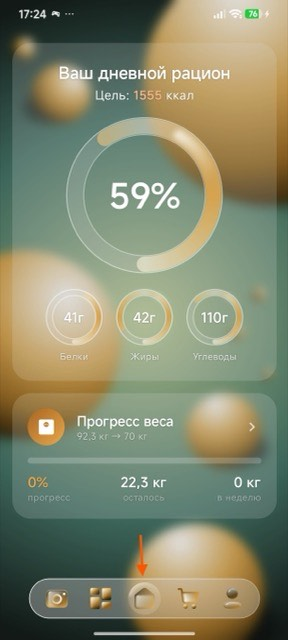
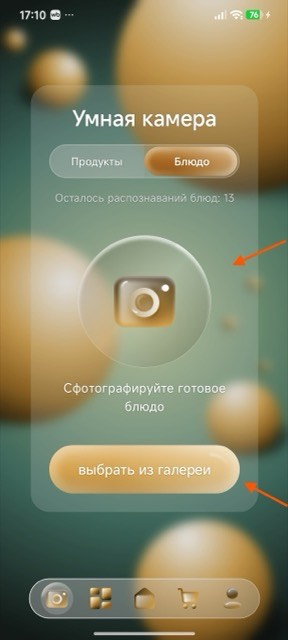

Прошёл модерацию RuStore
AI-помощник по питанию
EasyFood
- Распознаёт еду по фото через GPT‑4 Vision
- Считает КБЖУ, строит меню и список покупок
- Офлайн‑режим и realtime‑синхронизация дневника
Kotlin
Jetpack Compose
FastAPI
MongoDB
Redis
GPT-4 Vision
Docker